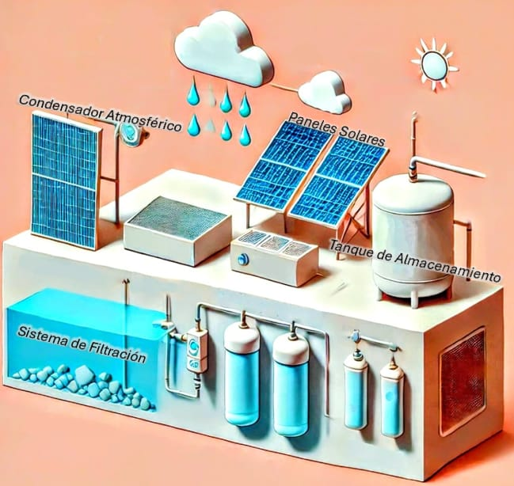

Introducción
EcoGota es un proyecto innovador que busca abordar la escasez de agua potable en regiones
con alta humedad relativa, como el Caribe colombiano, mediante la captación de agua del
aire. Nuestra solución se basa en la tecnología de condensación atmosférica, aprovechando
la humedad presente en el ambiente para generar agua limpia y segura, destinada a
comunidades rurales y áreas urbanas marginales, con especial atención a poblaciones
indígenas y afrocolombianas.
El objetivo principal de EcoGota es diseñar un prototipo eficiente que no solo capture agua
del aire, sino que también integre un sistema de purificación, garantizando así el acceso a
agua de calidad. Además, buscamos optimizar el consumo energético del sistema,
permitiendo su implementación en regiones con acceso limitado a la energía eléctrica.
En un contexto donde la falta de infraestructura hídrica, la escasa inversión tecnológica y la
mala gestión del agua agravan la crisis de recursos hídricos, EcoGota ofrece una solución
sostenible y adaptable a diferentes entornos. Este proyecto tiene el potencial de generar un
impacto social, económico y ambiental positivo, promoviendo el acceso equitativo a este
recurso vital.
Objetivos
Objetivo General
Objetivos Específicos
Justificación
Situación Problematica
• La problemática de la escasez de agua en el Caribe colombiano está relacionada con varios factores que afectan tanto a la infraestructura hídrica como al acceso equitativo al recurso, generando grandes pérdidas de agua potable. Estos factores incluyen:
1) Infraestructura definiente y envejecida:
En muchas ciudades y pueblos del Caribe colombiano, la red de distribución de agua es obsoleta o ha recibido poco mantenimiento a lo largo del tiempo. Esto provoca fugas constantes en las tuberías, tanques de almacenamiento y conexiones, lo que resulta en pérdidas significativas de agua.
2) Falta de inversion en tecnologia y mantenimiento:
La falta de recursos financieros para invertir en tecnología moderna para la detección de fugas o en la modernización de la infraestructura existente es un problema recurrente. El mantenimiento insuficiente agrava la situación, aumentando la frecuencia de la escasez de agua.
3) Alta humedad y clima extremo:
Las condiciones climáticas en la región, con altas temperaturas y niveles de humedad, hacen que la evaporación del agua sea rápida. Sin embargo, cuando se producen fugas, grandes cantidades de agua se pierden antes de llegar a las comunidades que la necesitan.
4) Impacto en la población vulnerable:
La escasez de agua también agrava la situación en las zonas rurales y en áreas urbanas marginales, donde el acceso al agua potable ya es limitado. Las fugas reducen la cantidad de agua disponible para el consumo humano y actividades cotidianas, afectando principalmente a las poblaciones más vulnerables.
5) Gestion inesficiente del recurso hídrico:
Las instituciones responsables de la gestión del agua no siempre tienen planes efectivos para reducir las fugas ni el personal técnico capacitado para abordar el problema de manera integral. Esto resulta en una gestión ineficaz que contribuye al desperdicio y a la escasez del recurso.
6) Consecuencias ambientales y económicas:
Las fugas de agua no solo generan un desperdicio económico, sino que también tienen un impacto negativo en el medio ambiente, especialmente en una región que ya enfrenta problemas de sequías periódicas.
Análisis Situación Actual
La falta de modernización en las redes de suministro y monitoreo de agua, especialmente en
regiones como el Magdalena, ha resultado en sistemas de riego que carecen de la tecnología
necesaria para un uso eficiente del recurso. En ciudades como Santa Marta, la creciente
presión del turismo incrementa el consumo de grandes cantidades de agua, mientras que
muchos habitantes locales dependen de carros cisterna para acceder al agua potable.
Organizaciones como la Corporación Autónoma Regional del Atlántico (CRA) y el Instituto
Ambiental de Estocolmo (SEI) están llevando a cabo una Evaluación Regional del Agua para
monitorear el estado de las cuencas hídricas. Utilizando modelos científicos, simulan
escenarios de demanda y disponibilidad de agua, lo que contribuye a una mejor toma de
decisiones y promueve una gestión más sostenible del recurso.
No obstante, las soluciones implementadas hasta el momento no han sido completamente
efectivas. En áreas como el Magdalena, las intervenciones para mitigar problemas como la
erosión costera y la escasez de agua han sido temporales. Por ejemplo, la construcción de
enrocados ha mitigado algunos daños a corto plazo, pero no ha abordado los problemas de
raíz.
Además, la falta de planificación adecuada y la atención de actualizaciones en los Planes de
Ordenamiento Territorial (POT) siguen siendo obstáculos para la implementación de
soluciones sostenibles a largo plazo.
Marco Teórico
Normativa Actual
Volver a la Tabla de ContenidoEnergía Renovable y Autogeneración (Ley 1715 de 2014)
En Colmbia,la producción, instalación y uso de paneles solares esta regulada principalmente por la Ley 1715 de 2014, que promueve el uso de fuentes no convencionales de energia. Esta ley incentiva la adopción de tecnologías limpias, como los paneles solares, otorgando beneficios fiscales, exenciones de IVA y aranceles, y deducciones trubitarias para quienes las implementan. En el caso de EcoGota, estos incentivos apoyan la autogeneración de energía a través de paneles solares, asegurando un suministro energético sostenible para el sistema de captación de agua.
Normativa sobre Captación de Agua Atmosférica (Ley 373 de 1997)
Aunque no existe una regulación especifica para la captación de agua atmosférica en Colombia,EcoGota puede beneficiarse de la Ley 373 de 1997, que promueve el uso eficiente y el ahorro de agua. Las autoridades ambientales, como la Autoridad Nacional de Licencias Ambientales(ANLA), pueden intervenir si se detecta un impacto significativo en los recursos hidrico locales, en cuyo caso sería necesario obtener permisos adicionales.
Normas de Calidad del Agua Potable(OMS y Colombia)
El proyecto debe adherirse a los estándares de calidad del agua potable establecidos por la Organización Mundial de la Salud(OMS) y las normativas colombianas, como el Decreto 1575 de 2007 y la Resolución 2115 de 2007.Estas normativas regulan la calidad microbiológia, física y química del agua, asegurando que el agua producida por EcoGota sea segurapara el consumo humano. Se deben implementer sistemas de filtración y desinfección, como carbón activado y rayos UV, para garantizar que el agua cumpla con los parámetros establecidos de potabilidad.
Normativa Ambiental (Lay 99 de 1993)
La ley 99 de 1993 establece las regulaciones ambientales en Colombia y es crucial para proyectos como EcoGota que captan agua del aire, ya que es necesario evaluar cualquier posible impacto en el ciclo hidrológico local. Para mitigar estos impactos, eñ proyecto debe solicitarlas licencias ambientales correspondientes emitidas por las Corporaciones Autónomas Regionales(CAR) y realizar una Evaluación de impacto Ambiental(EIA),si fuera necesario.
Volver a la Tabla de ContenidoSeguridad
Volver a la Tabla de ContenidoSeguridad Eléctrica y Mecánica
El sistema EcoGota debe cumplir con los lineamientos de seguridad elétrica establecido por la Norma Técnica Colombiana(NTC) 2050,que regula la instalación de sistemas eléctrico, garantizando que los paneles solares operen de manera segura y confiable. Además, la NTC 1000 asegura la seguridad mecánica del equipo, reduciendo riesgos para los usuarios en áreas rurales o urbanas marginales.
Seguridad en el Tratamiento de Agua
En cuanto a la seguridad en la captación y purificación del agua, el diseño debe inculir tecnologías que cumplan con la Resolución 2115 del 2007, La cual fija los parámetros de calidad de agua para consumo humano. Los sistemas deben eliminar patógenos y contaminantes, asegurando que el agua producida sea segura y no represente un riesgo para la salud pública.
Seguridad Ambiental
Para mantener la sostenibilidad del proyecto, el sistema de captación del agua debe operar con un mínimo consumo energético y priorizar el uso de energías renovables, como los paneles solares. Además, el diseño debe reducir le generación de residuos peligrosos y minimizar impactos como el ruido o el calor durante su operación.
Volver a la Tabla de ContenidoCalidad
Volver a la Tabla de ContenidoNormas de Calidad del Sistema(ISO 9001, NTC 6078 E IEC 61215)
Los componentes del sistema, como el condensador atmosférico, los paneles solares y los sistemas de purificación. deben cumplir con los estánderes de calidad reconocidos. El cumplimiento de la ISO 9001 para la gestión de calidad garantiza que los procesos de fabricación y operación sean fiables y eficientes. Además, la NTC 6078 y la IEC 61215 validad la calidad y la durabilidad de los panles solares, Asegurando un funcionamiento óptimo y prolongado en las condiciones ambientales de la región.
Volver a la Tabla de ContenidoNormativa Técnica y de Seguridad
Volver a la Tabla de ContenidoCertificaciones de Seguridad
Los paneles solares y sistemas electricos deben cumplir con la NTC 2050 y la Ley 1715 del 2014, que fomentan el uso de energías renovables y aseguran una instalación electrica adecuada y segura. También, los sistemas de captación de agua deben seguir las normativas relacionadas con la calidad del agua, como la resolución 2115 del 2007, que asegura que el agua sea acta para el consumo humano.
Certificaciones Internacionales
El proyecto EcoGota puede optar por certificaciones internacionales, como la ISO 14001, que acredicta la gestión sostenible del medio ambiente, y la ISO 22000, que regula y inocuidad alimentaria en el tratamiento del agua, además, la certificación CE asegura que los productos cumplen con las normas de seguridad aplicablee en el mercado Europeo.
Volver a la Tabla de ContenidoAspectos Legales y Contractuales
Volver a la Tabla de ContenidoIncentivos Fiscales y Beneficios Legales
La Ley 1715 del 2014 otorga incentivos fiscales que incluyen deducciones tributarias, exenciones del IVA y aranceles para la importación de equipo de energia renovable, lo cual favorece el desarrollo e instalación de EcoGota. Es importante definir acuerdos contractuales claros con proveedores, instaladores y entidades financieras para asegurar la implementación exitosa del proyecto.
Permisos y Licencias Ambientales
Si el proyecto genera un impacto significativo en el ciclo hidrológico local, podria ser necesario obtener permisos de la ANLA o el ministerio de ambiente, a fin de cumplir con las regulaciones ambientales vigentes en el país.
Propiedad Intelectual
Es recomendable proteger la innovaciones tecnologicas del proyecto mediante el registro de patentes y marcas comerciales para garantizar los derechos de propiedad intelectual.
Volver a la Tabla de ContenidoImpactos Ambientales
Volver a la Tabla de ContenidoConsumo Energetico y Sostenibilidad
El uso de paneles solares en EcoGota contribuye a la sostenibilidad del proyecto, al reducir la dependencia de fuentes de energia no renovables y la huella de carbono. El sistema esta diseñado para hacer energeticamente eficiente, priorizando fuentes de energia renovable y minimizandosu impacto ambiental a largo plazo.
Uso de Materiales Reciclables
El proyecto emplea materiales reciclables en la fabricacion de los equipos, reduciendo la generación de residuos y favoreciendo un ciclo de vida mas sostenible. Esto garantiza que el sistema sea duradero y que los costos de mantenimiento y reemplazo sean mínimos.
Volver a la Tabla de Contenido¿Qué existe actualmente?
Volver a la Tabla de ContenidoExisten varias tecnologías y soluciones enfocadas en la condensación de agua apartir del aire, que han sido aplicadas en regiones con alta humedad, particularmente donde el acceso a fuentes de agua potable es limitado.
Condensadores de Agua Atmosférica(AWG)
Estas máquinas extraen agua del aire utilizando condensación. Funcionan enfriando el aire hasta que el vapor de agua se convierte en líquido.Los ejemplos populares incluyen dispositivos como WaterSeer y Ecoloblue.
Caracateristicas:
• Principio de Funcionamiento: Utilizan un compresor para enfriar el aire y un sistema de filtros para purificar el agua condensada.
• Consumo Energetico: En general son altamente dependientes de electricidad, lo que limita su uso en areas rurales sin acceso confiable a energia.
• Producción Diario: En condiciones óptimas, pueden general entre 20 a 30 litros de agua por día, pero esto varía según la humedad relativa.
Diferenciación del Proyecto:
• Eficiencia Energetica: Uno de los principales puntos de mejora de nuestro proyecto podría ser la optimizacion del uso de energía, utilizando fuentes alternativas como energía solar o mecanismos pasivos para la condensación. Esto
reduciría la dependencia energética de los sistemas tradicionales, haciéndolo más viable en áreas rurales con acceso limitado a electricidad.
• Adaptación Local: Nuestro poryecto podria centrarse en adaptar el diseño a las condiciones específicas del Caribe Colombiano, optimizando el proceso de condensación según la variabilidad de la humedad y temperatura locales, lo que incrementaria
la eficiencia en la recolección de agua.
Cosecha de niebla
Esta tecnología utiliza mallas que capturan gotas de agua de la niebla, las cuales luego se recolectan en contenedores. Esta técnica ha sido empleada exitosamente en regiones montañosas de Chile y Perú.
Caracteristicas:
•Costos:Es relativamente barato y facil de instalar, con bajo requerimiento de mantenimiento.
•Producción diaria:Puede generar entre dos a diez litros de agua por metro cuadrado de malla, dependiendo de la densidad de la niebla.
•Limitaciones:Depende esclusivamente de la presencia de niebla, lo que la hace menos efectiva en áreas donde no es común.
•Condiciones climáticas:A diferencia de la niebla, el caribe colombiano tiene una alta humedad relativa, por lo que el método de condensación del aire es más apropiado que la cosecha de niebla. El prototipo de condensación de agua atmosférica propuesto podría generar agua a patir del vapor sin depender de la presencia de niebla.
•Purificacion integrada:Una mejora significativa sería la implementación de un sistema integrado de purificación que garantice la potabilidad del agua condensada, asegurando que sea apta para el consumo humano sin necesidad de tratamientos erxternos.
Desalinización solar
Esta tecnologia utiliza el calor del sol para evaporar agua de fuentes salinas, eliminando el contenido de sal y otras impurezas para obtener agua potable.
Caracteristicas:
•Energía renovable:Aprovecha la energia solar, lo que lo hace una solución sostenible
•Aplicaciones:Se utiliza en áreas costeras o desérticas, donde la única fuente de agua disponible es el agua salada.
•Limitaciones:La producción diaria de agua es relativamente baja y depende en gran medida de la intensidad solar, lo que puede no ser eficiente en áreas con nubosidad o clima variable.
•Aplicación en zonas no costeras:Mientras que la desalinización solar es adecuada para áreas con acceso a agua salada, nuestro proyecto puede tener una aplicación más amplia, dado que se enfoca en la condensación de vapor de agua del aire, lo que es más versátil y aplicable a diversas geografías, incluidas las áreas interiores del Caribe colombiano.
•Eficiencia en producción de agua:Nuestro sistema podría incorporar principios de refrigeración pasiva o solar, lo que permitiría mejorar la producción de agua condensada sin un consumo energético excesivo.
Enfriadores radiativos
Estos dispositivos utilizan materiales altamente reflectantes que enfrían una superficie por debajo de la temperatura ambiente durante la noche, lo que permite la condensación de agua del aire.
Caracteristicas:
•Función nocturna:Opera principalmente durante la noche, cuando las temperaturas disminuyen lo suficiente como para favorecer la condensación.
•Consumo energético:Estos sistemas no requieren electricidad, lo que los hace muy eficientes desde el punto de vista energético.
•Mejora en la producción diurna: Aunque los enfriadores radiativos son efectivos por la noche, nuestro proyecto puede diseñarse para funcionar tanto de día como de noche, aprovechando la alta humedad relativa y optimizando el sistema para producir agua de manera continua.
•Innovación en almacenamiento: Integrar un sistema de almacenamiento eficiente que conserve el agua condensada durante el día podría ser otra mejora significativa frente a estas tecnologías.
Propuestas del proyecto
•Eficiencia energética:Al incorporar energías renovables como solar o mecanismos pasivos de enfriamiento, el sistema puede operar con un menor consumo de energía que los AWG tradicionales.
•Adaptabilidad al entorno: Un diseño optimizado para las condiciones climáticas específicas del Caribe colombiano diferenciará el proyecto de soluciones más generalizadas.
•Purificación del agua:El enfoque en un sistema de purificación integrado mejorará la seguridad del agua, mientras que muchas tecnologías requieren procesos externos para hacer el agua potable.
•Costos reducidos: Utilizando tecnologías simples y eficientes, podría reducir los costos de fabricación e implementación, haciéndolo accesible para comunidades rurales
que no tienen grandes presupuestos para proyectos hídricos.
Entorno En Donde Se Ubica El Proyecto Y Usuarios Quienes Lo Usaran
Contexto geográfico:
Volver a la Tabla de ContenidoEl Caribe colombiano es una región caracterizada por su clima tropical, con temperaturas que suelen oscilar entre los 24°C y los 32°C, y una humedad relativa que en algunas zonas supera el 85%. Aunque la región cuenta con abundantes cuerpos de agua (como ríos y lagunas), su acceso es limitado debido a la distribución desigual de los recursos hídricos y las infraestructuras. Las áreas costeras y planas del Caribe tienden a enfrentar temporadas de sequía prolongadas, agravadas por los efectos del cambio climático, lo que afecta el suministro de agua en muchas comunidades.
Principales áreas de interés:
Zonas rurales y semiurbanas de los departamentos de La Guajira, Magdalena, Atlántico, Bolívar y Sucre, donde la escasez de agua potable es una problemática recurrente. En áreas urbanas como Santa Marta y Cartagena, la alta demanda de agua por parte del turismo agrava el acceso a las poblaciones locales.
Características de los usuarios beneficiarios:
Comunidades rurales:
Volver a la Tabla de ContenidoLos principales beneficiarios serán las poblaciones rurales del Caribe, especialmente en zonas con acceso limitado al agua potable y que dependen de métodos alternativos
como la recolección de agua de lluvia. Estas comunidades generalmente tienen menos recursos económicos, alta dependencia de actividades agrícolas y un acceso limitado a tecnologías modernas. En las zonas urbanas, el proyecto beneficiará a comunidades de bajos ingresos que sufren de cortes frecuentes de agua o dependientes de caros sistemas
de distribución alternativos, como el suministro mediante carros cisterna. Muchas de estas comunidades, especialmente en La Guajira y Magdalena, enfrentan una doble vulnerabilidad debido a su situación económica y la falta de infraestructura básica.
Además, estas comunidades han sido habitualmente excluidas de políticas públicas que aseguran un acceso sostenible al agua. Los agricultores locales podrían utilizar el agua condensada para fines agrícolas, reduciendo su dependencia de las lluvias estacionales y mejorando la seguridad alimentaria en la región.
Áreas urbanas marginales:
Poblaciones indígenas y afrocolombianas:
Pequeños agricultores:
Este proyecto no solo mejorará el acceso al agua potable para las comunidades más vulnerables, sino que también contribuirá a mitigar los efectos sociales y económicos derivados de la escasez de agua,
creando oportunidades para el desarrollo sostenible en la región
Disciplinas O Ciencias Que Se Involucran
Ingeniería mecánica:
Volver a la Tabla de Contenido Rol:Diseño y desarrollo del sistema de condensación.
Descripción: Esta disciplina se encarga del diseño de los mecanismos que permitirán la condensación eficiente del vapor de agua en el aire, incluyendo los sistemas de ventilación,
disipadores de calor y materiales que optimizan el proceso de enfriamiento. La ingeniería mecánica también se ocupa de la estructura física del condensador, asegurando su resistencia y
durabilidad frente a las condiciones climáticas del Caribe colombiano.
Ingeniería Eléctrica:
Volver a la Tabla de Contenido Rol: Diseño y desarrollo del sistema de condensación.
Descripción: Es crucial para garantizar que el sistema de condensación funcione de manera autónoma o con mínima intervención humana.
Esto incluye la integración de fuentes de energía renovable, como paneles solares, para alimentar el sistema en áreas rurales o con acceso limitado a la red eléctrica.
Además, se optimiza el consumo energético de los componentes eléctricos del condensador.
Ingeniería química:
Volver a la Tabla de Contenido Rol:Tratamiento y purificación del agua.
Descripción:Una vez condensada el agua del aire, esta disciplina se encarga de los procesos necesarios para garantizar que el agua sea apta para el consumo humano.
Esto incluye la eliminación de contaminantes, microorganismos y partículas que pudieran haberse adherido durante el proceso de condensación.
También interviene en la selección de materiales y tecnologías de filtrado y purificación.
Ciencias ambientales:
Volver a la Tabla de ContenidoRol:Evaluación de impactos y sostenibilidad.
Descripción: Esta disciplina se enfoca en la evaluación del impacto ambiental del proyecto, asegurando que la extracción de agua atmosférica no afecte negativamente los ecosistemas locales.
Además, garantiza que el proyecto sea sostenible a largo plazo, minimizando el consumo de energía y maximizando el uso de fuentes renovables.
También colabora en el análisis de los efectos del cambio climático en la disponibilidad de agua en la atmósfera.
Ingeniería civil:
Volver a la Tabla de ContenidoRol:Infraestructura y emplazamiento del condensador.
Descripción:La ingeniería civil es fundamental para la selección del sitio y la construcción de la infraestructura necesaria para instalar el condensador.
Se encargan de asegurar que el sistema esté adecuadamente protegido de los elementos y optimizado para el clima de la región.
Además, se considera el acceso para la instalación y mantenimiento en áreas rurales.
Encuesta
Con el fin de obtener información relevante para el desarrollo del proyecto EcoGota, se llevó a cabo una encuesta dirigida a un total de 42 personas.
El objetivo principal de esta encuesta fue identificar las necesidades, expectativas y percepciones de los posibles usuarios respecto a un sistema que genera agua potable a partir del aire.
La encuesta abordó temas relacionados con el consumo de agua diario, las prioridades en el uso de agua potable, las fuentes de energía preferidas,
la sostenibilidad del sistema, su mantenimiento y la disposición de la comunidad para colaborar en su implementación. Los resultados obtenidos nos brindan una perspectiva
valiosa que contribuirá al diseño y funcionalidad del sistema, garantizando que se ajuste a las necesidades reales de los usuarios y sea factible de implementar en diferentes contextos.
Necesidades Diarias de Agua:
Volver a la Tabla de ContenidoResultados:La mayoría considera suficiente entre 20 y 50 litros por familia. Este rango es adecuado para cubrir las necesidades básicas de una familia promedio,
que incluye beber, cocinar y algunas tareas de limpieza.
Decisión: Diseñar un sistema de recolección de agua que pueda garantizar al menos esta cantidad de agua diaria, priorizando la eficiencia en la captación y almacenamiento.
Usos Principales del Agua Potable:
Volver a la Tabla de ContenidoResultados: Los usos principales son beber y cocinar, con algunos interesados en su uso para limpieza y agricultura.
Decisión: Asegurar que el sistema de producción o captación de agua priorice la calidad del agua para consumo humano, mientras que se considere
la posibilidad de diseñar un sistema de purificación adicional para usos no potables.
Preferencia de Energía Solar:
Volver a la Tabla de ContenidoResultados:La mayoría prefiere un sistema totalmente solar, aunque algunos sugieren un respaldo eléctrico.
Decisión:Invertir en un sistema que funcione completamente con energía solar, considerando la inclusión de un respaldo eléctrico como una opción futura.
Batería de Energía Solar:
Volver a la Tabla de ContenidoResultados:Unánimamente se considera que debería incluir una batería para funcionar sin interrupciones.
Decisión:Asegurar que el diseño del sistema incluya almacenamiento de energía, lo que permitirá operar de manera continua incluso en días nublados.
Importancia de la Seguridad del Agua:
Volver a la Tabla de ContenidoResultados:Muchos creen que el agua debe ser 100% potable, aunque algunos aceptan que pueda tener otros usos.
Decisión:Enfocar los esfuerzos en un sistema que garantice la potabilidad del agua, priorizando tecnologías de filtración y purificación.
Costo vs. Producción:
Volver a la Tabla de ContenidoResultados:La mayoría prefiere un sistema más económico aunque produzca menos agua.
Decisión:Buscar soluciones de bajo costo que puedan ser escalables en producción, para asegurar que más familias puedan beneficiarse del sistema.
Apoyo Gubernamental:
Volver a la Tabla de ContenidoResultados:Casi todos creen que el sistema debería recibir apoyo gubernamental o de ONG.
Decisión:Iniciar diálogos con entidades gubernamentales y ONGs para explorar oportunidades de financiamiento y apoyo técnico.
Frecuencia de Mantenimiento:
Volver a la Tabla de ContenidoResultados: La opción más común es cada tres meses.
Decisión:un protocolo de mantenimiento fácil y accesible, que permita a los usuarios realizarlo sin complicaciones.
Diseño Compacto:
Volver a la Tabla de ContenidoResultados:La mayoría desea un sistema compacto y fácil de instalar.
Decisión:Enfocar el diseño del sistema en dimensiones reducidas y una instalación sencilla para facilitar la adopción en hogares y comunidades.
Importancia Medioambiental:
Volver a la Tabla de ContenidoResultados:Hay un gran interés en que el sistema sea amigable con el medio ambiente.
Decisión:materiales sostenibles y tecnologías limpias en el diseño del sistema, promoviendo su impacto positivo en el medio ambiente.
Impacto Comunitario:
Volver a la Tabla de ContenidoResultados:Se cree que el sistema debería beneficiar a más de 30 personas para ser efectivo.
Decisión:Diseñar el sistema con un enfoque comunitario, asegurando que su alcance beneficie a grupos suficientes para maximizar su impacto.
Uso Compartido o Individual:
Volver a la Tabla de ContenidoResultados:Hay preferencia por el uso compartido en comunidades.
Decisión:Implementar un modelo de uso comunitario que fomente la colaboración entre vecinos y reduzca costos individuales.
Adaptabilidad Futura:
Volver a la Tabla de ContenidoResultados:La mayoría quiere un sistema que pueda ampliarse en el futuro.
Decisión: Asegurar que el sistema sea modular y pueda expandirse a medida que crecen las necesidades de la comunidad.
Adaptación Climática:
Volver a la Tabla de ContenidoResultados:Es importante que funcione en distintas condiciones climáticas.
Decisión:ñar el sistema para que sea versátil y efectivo en diversas condiciones meteorológicas, lo que incluye resiliencia ante sequías o lluvias excesivas.
Aspectos Importantes:
Volver a la Tabla de ContenidoResultados:Los aspectos más destacados incluyen ser económico, funcionar con energía solar y ser fácil de mantener.
Decisión: Priorizar estos elementos en el desarrollo y diseño del sistema, asegurando su viabilidad a largo plazo.
Movilidad o Resistencia:
Volver a la Tabla de ContenidoResultados:La mayoría prefiere un sistema móvil.
Decisión:Considerar un diseño que permita la movilidad del sistema, facilitando su uso en diferentes ubicaciones.
Importancia Estética:
Volver a la Tabla de ContenidoResultados:Moderadamente importante, priorizando la funcionalidad.
Decisión:Aunque la estética no es la prioridad, se puede trabajar en un diseño visualmente agradable que no comprometa la funcionalidad.
Uso en Espacios Comunitarios:
Volver a la Tabla de ContenidoResultados:Se considera útil en lugares comunitarios como escuelas o centros de salud.
Decisión:Planificar la implementación del sistema en espacios comunitarios para maximizar su impacto y promover la salud pública.
Disposición a Compartir Costos:
Volver a la Tabla de ContenidoResultados:Se percibe disposición a discutir la posibilidad de compartir costos de mantenimiento.
Decisión:Facilitar acuerdos entre miembros de la comunidad para compartir costos, asegurando un mantenimiento más sostenible del sistema.
Otras Fuentes de Agua:
Volver a la Tabla de ContenidoResultados:La mayoría indica que no hay fuentes confiables o suficientes.
Decisión:la importancia del sistema de captación de agua como una solución viable ante la falta de fuentes confiables.
Capacidad de Almacenamiento:
Volver a la Tabla de ContenidoResultados:La mayoría lo considera muy importante para asegurar agua en días de poca humedad.
Decisión:Incluir una capacidad de almacenamiento adecuada para mitigar el impacto de la estacionalidad en la disponibilidad de agua.
Conexión a Tuberías:
Volver a la Tabla de ContenidoResultados:Hay opiniones divididas entre conexión a tuberías y un sistema independiente.
Decisión: ambas opciones en el diseño del sistema, permitiendo a los usuarios elegir según sus necesidades y condiciones.
Beneficios Adicionales:
Volver a la Tabla de ContenidoResultados: La calidad de vida y menor dependencia de otras fuentes de agua son los beneficios más esperados.
Decisión: Enfatizar estos beneficios en la promoción del sistema, mostrando cómo contribuye a mejorar la calidad de vida y la autosuficiencia.
Boceto
Volver a la Tabla de ContenidoEl siguiente esquema muestra un sistema sostenible de recolección y purificación de agua para el proyecto EcoGota. El sistema está compuesto por un condensador atmosférico, paneles solares para su funcionamiento, un sistema de filtración y un tanque de almacenamiento. Este diseño permite la obtención de agua del aire, su purificación y su almacenamiento eficiente para su uso posterior, todo alimentado por energía solar.
Etapa 1
Volver a la Tabla de ContenidoCaptación de Agua Atmosférica:
• Condensador Atmosférico: El sistema incluye un condensador atmosférico que extrae la humedad del aire. Este dispositivo enfría el aire hasta que alcanza el punto de condensación, permitiendo que las gotas de agua se formen.
•Proceso de Condensación: El aire pasa a través de una superficie fría dentro del condensador, provocando la condensación del vapor de agua presente en la atmósfera, especialmente eficaz en regiones de alta humedad como el Caribe colombiano.
Etapa 2
Volver a la Tabla de ContenidoFiltración y Purificación del Agua:
• Filtro de Partículas: Una vez que el agua se condensa, pasa por un filtro de partículas para eliminar impurezas físicas como polvo o tierra.
• Carbón Activado: Después de la filtración inicial, el agua pasa por un filtro de carbón activado para eliminar compuestos orgánicos, mejorar su sabor y olor.
• Desinfección: El agua es tratada finalmente con rayos UV o cloro para eliminar cualquier patógeno (bacterias, virus, protozoos) y asegurar que sea completamente segura para el consumo humano.
Etapa 3
Volver a la Tabla de ContenidoAlmacenamiento:
• Tanque de Almacenamiento: El agua purificada se almacena en un tanque cerrado, diseñado para evitar que el agua se contamine nuevamente. Este tanque está equipado con un sistema de control para monitorear los niveles de agua y activar la captación cuando sea necesario.
Etapa 4
Volver a la Tabla de ContenidoGeneración de Energía:
• Paneles Solares: El sistema cuenta con paneles solares que proveen la energía necesaria para la operación del condensador y el sistema de purificación de agua. Esta energía también puede almacenarse en baterías para garantizar el funcionamiento durante la noche o en días nublados.
• Autosuficiencia Energética: Gracias a los paneles solares, el sistema puede operar de manera autosuficiente sin depender de fuentes de energía externas.
Etapa 5
Volver a la Tabla de ContenidoDistribución:
• Distribución de Agua: Una vez que el agua es purificada y almacenada en el tanque, está lista para ser distribuida a los usuarios. Este sistema puede ser utilizado en comunidades rurales o marginales, proporcionándoles una fuente confiable de agua potable.
Costos
El desarrollo del proyecto EcoGota implica una inversión inicial significativa, así como costos recurrentes asociados con el mantenimiento y operación de los sistemas implementados. Este análisis de costos se centra en tres componentes fundamentales: los condensadores atmosféricos de agua (AWG), los paneles solares para generación de energía, y los sistemas de filtración y purificación de agua. Se estima que, para abastecer a una comunidad de 500 habitantes, el costo total del sistema puede oscilar entre $301,000,000 y $522,000,000 COP. Además, se contemplan gastos anuales de mantenimiento que varían entre $19,000,000 y $22,000,000 COP. A continuación, se presenta un desglose detallado de cada componente y sus respectivos costos, proporcionando una visión clara de la inversión necesaria para garantizar el acceso sostenible al agua potable en la comunidad
Condensadores Atmosféricos de Agua (AWG)
Volver a la Tabla de Contenido• Capacidad requerida: Para una comunidad de 500 personas se necesitan aproximadamente 5,000-7,000 litros de agua diarios.
• Solución: Se requieren aproximadamente 4 condensadores atmosféricos de alta capacidad, produciendo 1,500-2,000 litros diarios cada uno.
Costos
o Condensadores: $40,000,000 - $60,000,000 COP por unidad.
o Total: $160,000,000 - $240,000,000 COP.
o Mantenimiento anual: $2,000,000 COP por unidad, total $8,000,000 COP.
Paneles Solares
Volver a la Tabla de Contenido• Capacidad requerida: alimentar los condensadores y el sistema de filtración, se requiere un sistema de energía solar de 8-12 kW.
Costos
o Paneles: $8,000,000 - $16,000,000 COP por kW.
o Total: $80,000,000 - $160,000,000 COP.
o Instalación y almacenamiento (baterías): $15,000,000 - $30,000,000 COP.
o Mantenimiento anual: $4,000,000 - $7,000,000 COP.
Sistemas de Filtración y Purificación de Agua
Volver a la Tabla de Contenido• Capacidad requerida:Filtración para 5,000 litros de agua diarios.
• Solución:Uso de filtros de partículas, carbón activado y sistemas UV.
Costos
o Sistemas de filtración: $20,000,000 - $40,000,000 COP.
o Mantenimiento anual: $3,000,000 COP para reemplazo de filtros cada 6-12 meses.
Tanques de Almacenamiento
Volver a la Tabla de Contenido•Capacidad requerida: Almacenar 7,000 litros de agua.
Costos
o Tanques de almacenamiento: $6,000,000 - $12,000,000 COP.
o Mantenimiento anual: $1,000,000 COP.
Componentes Eléctricos
Volver a la Tabla de Contenido•Inversores y baterías: Necesarios para gestionar la energía generada por los paneles solares.
Costos
o Inversores y componentes eléctricos: $20,000,000 - $40,000,000 COP.
o Mantenimiento anual: $3,000,000 COP.
Conclusiones
Volver a la Tabla de ContenidoAcceso al Agua Potable: EcoGota contribuye a mejorar el acceso al agua potable en comunidades vulnerables del Caribe colombiano, abordando la escasez de este recurso crítico.
Energía Renovable: La integración de paneles solares permite que el sistema sea autosuficiente energéticamente, alineándose con prácticas sostenibles y reduciendo la dependencia de fuentes no renovables.
Calidad del Agua: El sistema de condensación garantiza agua de calidad, cumpliendo con los estándares de potabilidad exigidos por la normativa colombiana y la OMS.
Beneficios Sociales: EcoGota genera empleo local durante la instalación y mantenimiento del sistema, contribuyendo al desarrollo económico de la comunidad.
Replicabilidad: El modelo puede ser adaptado y replicado en otras regiones con condiciones similares, ampliando su impacto en el acceso al agua y la sostenibilidad.
Referencias
Volver a la Tabla de Contenido• OMS), O. M. (s.f.). Normas de la Organización Mundial de la Salud (OMS) para la calidad del agua potable.
• Agencia Nacional de Licencias Ambientales (ANLA). (s.f.). Obtenido de https://www.anla.gov.co/
• Andes, U. d. (s.f.). En Colombia, 48 % del agua se pierde en sistemas de distribución.
• Botero, L. A. (s.f.). LA PARADOJA DE LA DISPONIBILIDAD. Revista ingenieria.
• Certificación), I. (. (s.f.). Normas Técnicas Colombianas (NTC 1000 y NTC 2050) (Seguridad eléctrica y mecánica).
• Colombia, M. d. (s.f.). Decreto 1575 de 2007 y Resolución 2115 de 2007 (Normativa colombiana de calidad del agua potable).
• Colombia, M. d. (s.f.). Ley 99 de 1993 (Normativa ambiental en Colombia):
• Corporación Autónoma Regional del Atlántico (CRA). (s.f.). Obtenido de https://www.crautonoma.gov.co/
• Cosecha de Niebla. (s.f.). Obtenido de https://fogquest.org/
• Desalinización Solar. (s.f.). Obtenido de https://www.irena.org/
• Instituto de Estudios Ambientales (IDEA) de la Universidad Nacional de Colombia. (s.f.). Obtenido de https://idea.unal.edu.co/
• Instituto de Hidrología, Meteorología y Estudios Ambientales (IDEAM). (s.f.). Obtenido de https://www.ideam.gov.co/
• International, N. (s.f.). NSF/ANSI 61 (Certificación de materiales en contacto con agua potable).
• LOS RETOS DEL ACCESO A AGUA POTABLE Y SANEAMIENTO BÁSICO DE LAS ZONAS RURALES EN COLOMBIA. (s.f.). revista uniandes.
• Ministerio de Vivienda, Ciudad y Territorio de Colombia. (s.f.). Obtenido de https://www.minvivienda.gov.co/
• Moreno, A. M. (s.f.). PROYECTO DE GRADO EN INGENIERÍA AMBIENTAL. UNIVERSIDAD DE LOS ANDES.
• Organización Mundial de la Salud (OMS). (s.f.). Obtenido de https://www.who.int/es
• Plan Nacional de Adaptación al Cambio Climático (PNACC). (s.f.). Obtenido de https://www.minambiente.gov.co/
• Regulación Ambiental en Colombia (Normas ISO y NTC). (s.f.). Obtenido de https://co.isotools.us/normas/ntc-iso-14001/#:~:text=En%20Colombia%2C%20se%20denomina%20NTC,se%20desarrolla%20respetando%20el%20entorno.
• tecnologías hídricas. (s.f.). Obtenido de https://www.fao.org/home/en
• WaterSeer. (s.f.). Obtenido de https://waterseer.org/